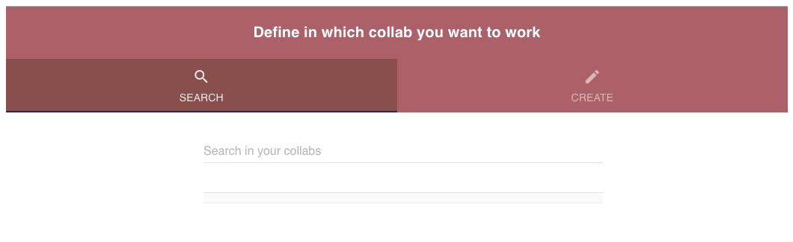
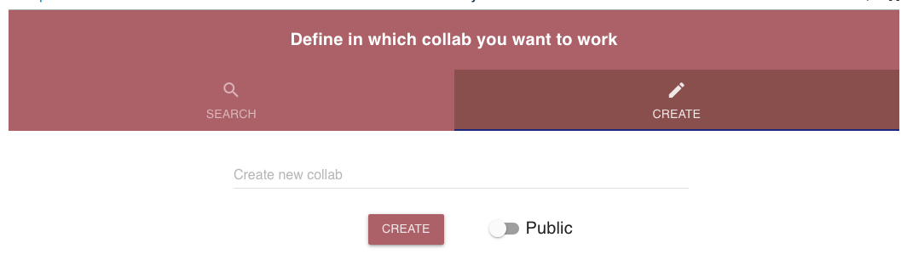
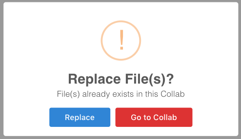

Getting started
The EBRAINS Cellular Level Simulation Interactive Workflows and Use Cases is organized around several Tools and Services from which you will be guided, in a few clicks, to and through scientific selected procedure.
Access to advanced functionalities may be subject to certain conditions, such owning an account on one of the HBP associated HPC systems and being part of a project on those. Please see the table at the end of this section on the services the CLS Interactive platform provides to different user classes.
First, a short overview is given on working with “Collabs” and on the organization of Use Cases:
Working with Collabs and Jupyter Notebook
The central scientific working place in the EBRAINS are the “Collabs” (from “Collaboration”). A Collab is an area in which one or more scientists can work on different/multiple tasks. An user can create a new Collab, use an existing one, add Use Cases to this Collab, and invite colleagues from the scientific community to collaborate.
Usually, when an user chooses an Use Case to work on, the following screen is presented to let the user select an existing Collab or to create a new Collab:
{kind=link}
Here you can enter the name of an existing Collab; any matching Collab will be listed and can be selected. Alternatively, you can select ‘Create new Collab’ which will lead to the following screen:
{kind=link}
If you select a Collab in which the chosen Use Case is already present, a dialog will appear that asks if you want to replace the existing content or be redirected to the old Use Case.
{kind=link}
Creating a new Collab is easy:
Select an meaningful name for the Collab (example: “Henry CA1 Connectome”).
Click on “Create” (you can choose if the Collab is visible to anyone (i.e. public), or private. You can change this later anytime).
The actual notebook or GUI of the Use Case you initially selected should open up.
A new Collab will open with your Use Case(s) and several options:
{kind=link}
Here, you have different possibilities to configure the Collab or to see some statistics:
- Overview
Will display recent activities in the Collab.
- Team
Here you can invite a colleague to collaborate
- Storage
Here you can see what data and files are in the Collab-storage. You can upload and download files to/from that storage space.
- Settings
Here you can change the privacy of the Collab and rename it, if required.
Workflows and Use Case Organization
{kind=link}
A schematic organization of the Workflows and Use Cases is shown in the figure on the left. An important aspect is that tools and services are open to the entire neuroscience community. This means that it does not matter if you belong to an HBP partner Institution, an external Laboratory/Company, or if you are just a curious studenti: you can get free access to the entire set of tools and services we offer.
These are implemented as either web applications or Python based Jupyter Notebooks. The latter are run on the EBRAINS jupyterlab platform (lab.ebrains.eu) and require an EBRAINS account (to be created with via an institutional email address). Instead, the web applications only require authentication for specific operations, such as submitting jobs to the HPC systems. In order to get an EBRAINS account, please register.
To start taking advantage of the Worklows and Use Cases, visit the dedicated page and follow this steps:
Navigate the Workflows and Use Cases list and select the most appropriate one, depending on your purposes.
Workflows and Use Cases implemented via web applications will be immediately opened in a new tab; for those implemented through a Jupyter Notebook, the users will have to choose a “Collab” (among those she/he is a member of) in which the notebook will be cloned and, in some cases, a neural model. In several cases, you can also upload your own data and work with them
Use your own imagination, collaborate with your team, use available tools or create new ones to pursue your scientific goal.
Once you are satisfied with the results, you can download them and/or make your work available to other users by releasing it into the HBP database; our support team can help you to create a new tool/service.
What you can do with the the Worklows and Use Cases available depends on your background and expertise. The CLS-Interactive platform follows a user-centric development, to enable users with different backgrounds and skill levels to exploit the available capabilities to pursue scientific goals. Tools and services are constantly updated, to improve their functionalities and usability, and may require different types of resources. To help you decide if a specific Use Case is appropriate for your expertise, each one is marked with intuitive icons, indicating the expected user experience, the Use Case maturity, and the type of resources required. These icons are shown on the rightmost part of the Use Case buttons, as in the figure below:
{kind=link}
User experience
{kind=link}
End users: Users that are interested in using the BSP infrastructure and facilities in the most user-friendly way, for relatively simple collaborative scientific projects using GUIs and public HPC resources, such as a Cloud Computing or the Neuroscience Gateway (NSG). These users are familiar with the electrophysiological mechanisms underlying a neuron’s behavior (ion channels, synaptic and firing properties, etc.) and understand how to run a simple simulation, but they have no experience in programming languages such as Python and/or the NEURON simulation environment.
{kind=link}
Power users: Users that are interested in using the BSP infrastructure and facilities for collaborative projects using public resources (such as the NSG), or their own HPC grants for one of the supercomputer centers supporting HBP activities (JSC and CINECA). These users are able to design, implement, run, and analyze models and simulations using the NEURON simulation environment; they understand the information needed to implement and run a simulation of morphologically and biophysically accurate neurons, and they have a working knowledge of Python.
{kind=link}
Experts and co-design partners: Users with a good knowledge of the inner working of Collabs/apps/webservices and/or a substantial expertise in implementing simulations of morphologically and biophysically accurate neurons and networks to model brain functions. These usesr contribute to the development of new Use Cases/models.
{kind=link}
Code developers: Designers and early adopters of initial versions of Collabs/apps/webservices/models. These users are top experts in their respective ICT and/or neuroscience field. Use Cases with this icon are usually restricted to Collabs with a team composed of mostly HBP partners, they serve the purpose of developing/testing advanced topics.
Use Case maturity
{kind=link}
A service of this maturity level has reached a certain robustness and may be used by early adopters.
{kind=link}
A service of this maturity level is under heavy development and recommended only for specialists’ use or use for co-design partners.
HPC access
{kind=link}
Use cases with this icon require a small to medium amount of High-Performance Computing resources. They can be either public, such as those available through the NSG, or provided by the user through a personal grant, such as a PRACE award, on one of the supercomputer centers supporting HBP activities (JSC and CINECA).
{kind=link}
This type of use cases needs large HPC resources. Typically, use cases showing this icon involve complex simulations of large scale cellular level model of brain areas/regions, that are deployed on JSC and CINECA systems. Subjected to technical compatibility and license agreement, this type of simulations can be delegated to be executed on other HPC systems, outside the BSP.
Video Tutorials
{kind=link}
Workflows/Use Cases with this icon provide a video tutorial that illustrates how to complete the entire execution. In some cases, the video tutorials allow the user to simulate the entire Use Case execution by clicking ad-hoc buttons. They are intended to be used in a point-and-click interactive way, so please do not make use of the video progress bar while playing the videos so as not to disrupt the execution flow.
Video tutorials that are currently available are grouped by topic below. Please click the “Play” button if you want to execute a video tutorial or the “Download” button to download it locally (after downloading a video .zip file, unzip it and double click on the “index.html” file in order to play the video tutorial in your browser).
Trace Analysis
Morphology Analysis
Single Cell Building
Single Cell In Silico Experiments
Service Account
The Service Account is a REST API service allowing developers to submit jobs, on behalf of HBP Collaboratory users, to remote HPC systems.
For a thourough explanation on how to use the service, please refer to the EBRAINS CLS-Interactive Service Account documentation.
Neuroscience Gateway (NSG)
The Neuroscience Gateway (NSG) portal https://www.nsgportal.org/ facilitates access and use of National Science Foundation (NSF) High Performance Computing (HPC) resources by neuroscientists. Computational modeling of cells and networks has become an essential part of neuroscience research, and researchers are using models to address problems of ever increasing complexity, e.g. large-scale network models and optimization or exploration of high dimensional parameter spaces. The NSG catalyzes such research by lowering or eliminating the administrative and technical barriers that currently make it difficult for researchers to use HPC resources. It offers free computer time to neuroscientists acquired via the supercomputer time allocation process managed by the Extreme Science and Engineering Discovery Environment (XSEDE) Resource Allocation Committee (XRAC). The portal provides access to the popular computational neuroscience tools installed on various HPC resources. It also provides a community mailing list for neuroscientists to collaborate and share ideas.
The NSG is accessible through a simple web portal, or programmatically using RESTful services. The NSG provides an administratively and technologically streamlined environment for uploading models, specifying HPC job parameters, querying running job status, receiving job completion notices, and storing and retrieving output data. The NSG transparently distributes user jobs to appropriate XSEDE HPC resources.
For Use Cases referring to hippocampal cells, the NSG will be accessed programmatically using RESTful services.
Successful job submission returns a message at each major processing point, as well as when problems are encountered. Each message has a timestamp, processing stage, and textual description. A job progresses through the following stages:
QUEUE - The job has been validated and placed in NSG’s queue.
COMMANDRENDERING - The job has reached the head of the queue and NSG has created the command line that will be run.
INPUTSTAGING - The NSG has created a temporary working directory for the job on the execution host and copied the input files over.
SUBMITTED - The job has been submited to the scheduler on the execution host.
LOAD_RESULTS - The job has finished running on the execution host and NSG has begun to transfer the results.
COMPLETED - Results have successfully been transferred and are available.
S Sivagnanam, A Majumdar, K Yoshimoto, V Astakhov, A Bandrowski, M. E. Martone, and N. T. Carnevale. “Introducing the Neuroscience Gateway”, IWSG, volume 993 of CEUR Workshop Proceedings, CEUR-WS.org, 2013.
Service Accessibility
Class |
Who? |
What? |
Terms |
Support |
|---|---|---|---|---|
ANONYMOUS |
anyone |
|
|
|
HBP IDENTITY |
anyone with an HBP Identity Account |
|
|
|
PROJECT ACCESS |
anyone who belongs to an HBP Partnering Project (or similar agreement) |
|
|
|
HBP MEMBERS |
Anyone who belongs to an HBP partner institution and is granted accreditation to a particular HBP Subproject |
|
|
|
(*) Note that access to HPC resources is subject to independent peer review by the HPC Platform. During the partnering project accession process, application to required resources will be coordinated. More information on HPC accounts and allocations can be found on the HPC Platform. For an overview of accessibility of services from other platforms, please look here.